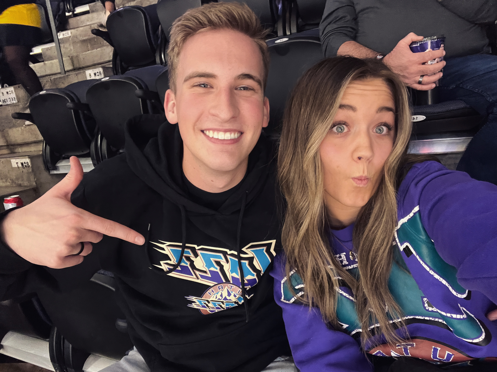

Family
Like most people, one of the most important things to me is my family. I am the oldest of 7 kids so I've grown up in a large family where things were ever hardly quiet. I served my mission in England and there I met my amazing wife, Jolene. We got married in July and I love love love spending time with her every day.

Basketball
My favorite sport is basketball. I love playing and watching it. There was never any other sport I wanted to play as a kid and it's statyed that way as I've gotten older. One of my wife and I's favorite activities to do together is go to Utah Jazz games in Salt Lake. And if we can't make it in person, we watch it on tv! Here's a fun clip from the Jazz's last game against the Golden State Warriors.

Music
I play music pretty much any time that I can. I rarely sit in the car in silence and my wife and I always have our Alexa playing music when we're at home. Music has always made me feel good and puts me in a better mood. I like a lot of different types of music. My favorite artist is a rapper named Logic but my favorite genre is indiecoustica. I listen to a lot of people like Lany and The Band CAMINO. I'm also a huge advocate for Spotify.

Movies
One of my favorite pastimes is to watch movies. Besides watching actual movies on the weekend, my wife and I usually end every night by watching an episode or two of the show we're watching. At the moment that would be "Friends" which is pretty good! I love the Harry Potter and Lord of the Rings movies but my all time favorite is Interstellar.